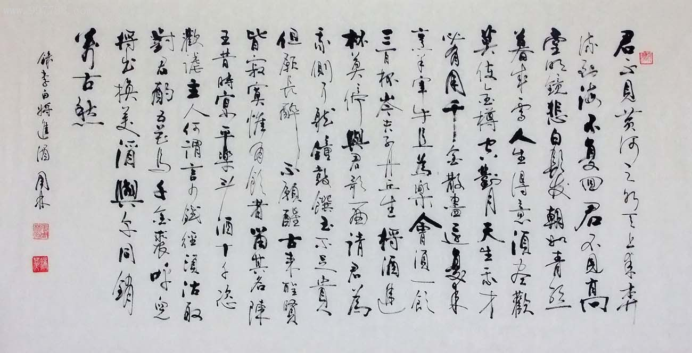
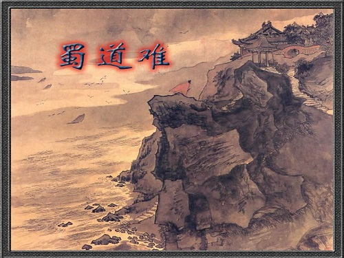
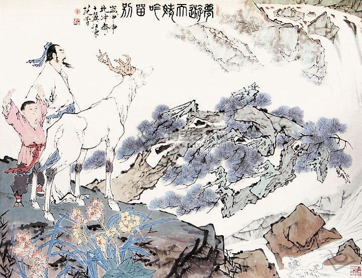

君不见黄河之水天上来，奔流到海不复回。
君不见高堂明镜悲白发，朝如青丝暮成雪。
人生得意须尽欢，莫使金樽空对月。
天生我材必有用，千金散尽还复来。
烹羊宰牛且为乐，会须一饮三百杯。
岑夫子，丹丘生，将进酒，杯莫停。
与君歌一曲，请君为我倾耳听。
钟鼓馔玉不足贵，但愿长醉不复醒。
古来圣贤皆寂寞，惟有饮者留其名。
陈王昔时宴平乐，斗酒十千恣欢谑。
主人何为言少钱，径须沽取对君酌。
五花马，千金裘，
呼儿将出换美酒，与尔同销万古愁。

噫吁嚱，危乎高哉！蜀道之难，难于上青天！
蚕丛及鱼凫，开国何茫然！
尔来四万八千岁，不与秦塞通人烟。
西当太白有鸟道，可以横绝峨眉巅。
地崩山摧壮士死，然后天梯石栈相钩连。
上有六龙回日之高标，下有冲波逆折之回川。
黄鹤之飞尚不得过，猿猱欲度愁攀援。
青泥何盘盘，百步九折萦岩峦。
扪参历井仰胁息，以手抚膺坐长叹。
问君西游何时还？畏途巉岩不可攀。
但见悲鸟号古木，雄飞雌从绕林间。
又闻子规啼夜月，愁空山。
蜀道之难,难于上青天，使人听此凋朱颜！
连峰去天不盈尺，枯松倒挂倚绝壁。
飞湍瀑流争喧豗，砯崖转石万壑雷。
其险也如此，嗟尔远道之人胡为乎来哉！
剑阁峥嵘而崔嵬，一夫当关，万夫莫开。
所守或匪亲，化为狼与豺。
朝避猛虎，夕避长蛇；磨牙吮血，杀人如麻。
锦城虽云乐，不如早还家。
蜀道之难,难于上青天，侧身西望长咨嗟！

海客谈瀛洲，烟涛微茫信难求。
越人语天姥，云霞明灭或可睹。
天姥连天向天横，势拔五岳掩赤城。
天台一万八千丈，对此欲倒东南倾。
我欲因之梦吴越，一夜飞度镜湖月。
湖月照我影，送我至剡溪。
谢公宿处今尚在，渌水荡漾清猿啼。
脚著谢公屐，身登青云梯。
半壁见海日，空中闻天鸡。
千岩万转路不定，迷花倚石忽已暝。
熊咆龙吟殷岩泉，栗深林兮惊层巅。
云青青兮欲雨，水澹澹兮生烟。
列缺霹雳，丘峦崩摧。洞天石扉，訇然中开。
青冥浩荡不见底，日月照耀金银台。
霓为衣兮风为马，云之君兮纷纷而来下。
虎鼓瑟兮鸾回车，仙之人兮列如麻。
忽魂悸以魄动，恍惊起而长嗟。
惟觉时之枕席，失向来之烟霞。
世间行乐亦如此，古来万事东流水。
别君去兮何时还，且放白鹿青崖间，
须行即骑访名山。安能摧眉折腰事权贵，
使我不得开心颜。
